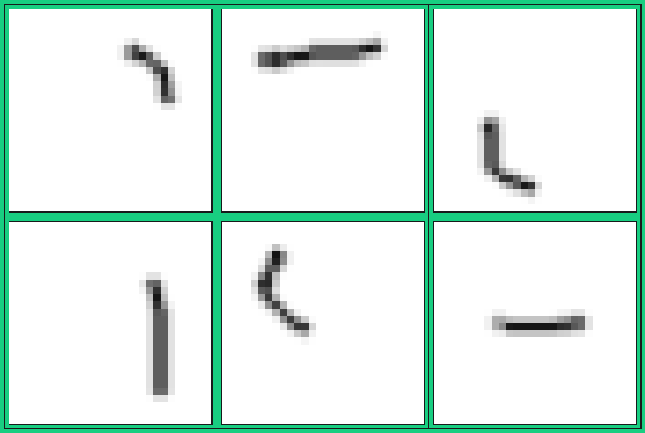
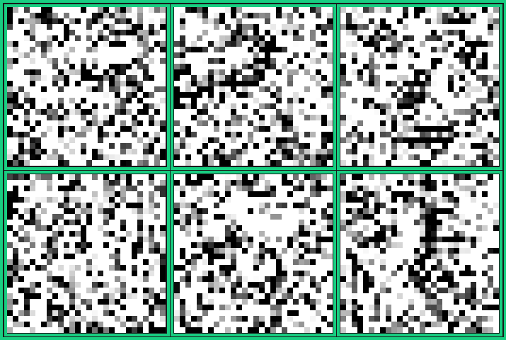

The MACHINIST (dataset)
In November 2018, I was reading about neural networks, and the first hands-on example that the website had was to build a neural network to recognize handwritten numbers using the MNIST dataset.
One month later, we had a lecture series on “Introduction to Machine Learning” in the winter camp of Programming Club, IITK. The MNIST dataset was again used to teach Neural Networks.
Now, the book that I’m following also has a section called “Hands-on Experience” in the very first chapter, which uses the MNIST dataset for handwritten character recognition.
Doing the same thing, again and again.
The first time, it felt like magic.
I didn’t know what we were doing. I didn’t know why we were doing that. But it made my laptop start its fan, and apparently, the tests showed that the network had trained well.
The second time, I was still clueless. Though a little bit less clueless.
I understood how the chosen error function translated to the update equations for the weights and biases. I knew what gradient descent was doing. I understood most of the ‘what’s and ‘how’s, but the ‘why’ questions remained unanswered.
The third time, I got overconfident.
I now (somewhat) understood the implications of the choice of the error function. I also (somewhat) understood why the network was pyramidal in shape. I understood the benefits of one-hot encoding over label encoding. Overall, it felt like I knew what I was doing and why I was doing that. So now it was time for my own theories.
Network Structure
The network had 3 layers - the input layer, one hidden layer, and the output layer.
The images in the MNIST dataset are of size 28 x 28. Thus the input layer was of size 784. The hidden layer was chosen to be of size 100. And since we were using one-hot encoding, our output layer was of size 10.
As such, there were supposed to be two pairs of weights and biases - one for the transition from the input layer to the hidden layer, and one for the transition from the hidden layer to the output layer. So the first set of weights was a matrix of size 784x100, and the second was a matrix of size 100x10. The biases were simply arrays of sizes 100 and 10.
Working
Here is how the network decides the digit that a given image corresponds to :
After training, we have calculated the two pairs of weights and biases. We are given an image of size 28x28. This image corresponds to an array of 784 integers between 0 and 255. We take the product of this array (1 x 784) with the first weight matrix (784 x 100) to get an array of size 1 x 100. We add the values of the first bias array to this to get the intermediate answer array. We then take the product of the intermediate answer array (1 x 100) and the second weight matrix (100 x 10) to get an array of size 1 x 10. Adding the second set of biases to this, we get the final answer array. Passing the values of this array to the softmax function, we obtain a score between 0 and 1 for each digit. We then say that the given image corresponds to the digit with the highest score.
The above could be restated in English as follows :
Through the training process, we have obtained a set of 100 patterns (first weight matrix), and we know that a particular digit has some subset of these patterns (second weight matrix). When we are given an image, in the first step, we calculate to what extent this image contains each of our 100 patterns. We then find the digit which has these patterns to a similar extent as the given image.
For example, suppose we are given an image in which has one horizontal line in the upper part of the image and one vertical line in the right portion. We realize that these patterns most closely correspond to the digit 7 and declare that this image has 7 written in it.
The Experiment
While the mathematical description of the model is explicit regarding the rules that determine the digit corresponding to an image, the English version has a rather mystical element to it, and this makes the latter more intriguing. As an attempt to demystify it, I tried to visualize the patterns.
The patterns are represented by the first weight matrix, which is of size 784 x 100. We could consider this matrix as 100 arrays of size 784 - with each array representing a pattern (a 28x28 image). I wrote a simple python program to convert an array of size 784 to a 28x28 image:
Epic Fail
This is what I expected the patterns to look like:
|  |
|---|
| Expected Patterns (shown 6 out of <indeterminate>) |
A curve in the top right corner is a feature of the digits 2, 3, 8, 9 and 0. A horizontal line in the upper part is a feature of the digit 7. A curve in the bottom left corner is a feature of the digits 5, 6, 8 and 0. A vertical line is a feature of the digits 1, 4 and 7. I anticipated that the patterns obtained from the weight matrix would look somewhat like these, but was utterly disappointed.
This is what the patterns actually looked like:
|  |
|---|
| Actual Patterns (shown 6 out of 100) |
Noise! That’s noise! Those images do not seem to have any pattern at all! But believe it or not, this is how it works.
Analysis
The result of the experiment was completely contrary to what I was hoping for. However, a sober reconsideration of the idea of the experiment would drop hints that the experiment was destined to fail :
- I had completely disregarded the importance of the bias array and the entire experiment was based solely on the first weight matrix.
- I had fallen prey to the fallacy that a computer would think exactly the way humans do.
And so with a failed experiment, I decided that I was done with ML for the day, or maybe for a few days.